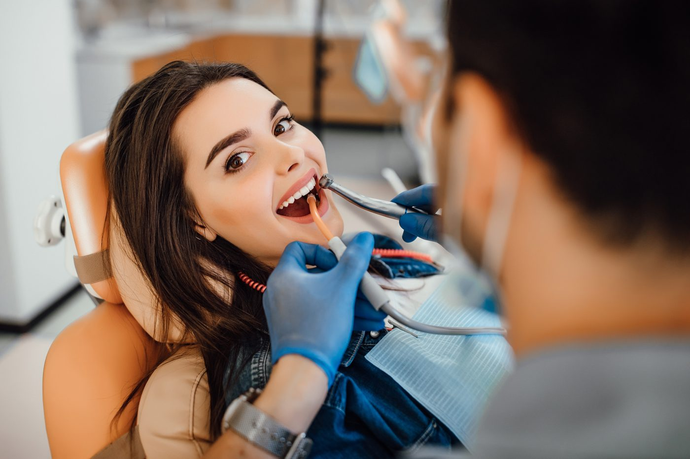

Sua saúde bucal é nossa prioridade
Seu sorriso em boas mãos
Na OdontoShine, unimos cuidado, conforto e qualidade para proporcionar o melhor atendimento para você e sua família.
Sua saúde bucal é nossa prioridade
Na OdontoShine, unimos cuidado, conforto e qualidade para proporcionar o melhor atendimento para você e sua família.


Sobre nós
A OdontoShine oferece tratamentos odontológicos de qualidade em um ambiente confortável e acolhedor.
Nossa equipe busca oferecer um atendimento humanizado, respeitando as necessidades de cada paciente.
Nossos diferenciais
Cuidado e atenção em todas as etapas do atendimento.
Equipe preparada para oferecer tratamentos seguros e de qualidade.
Espaço planejado para proporcionar tranquilidade durante suas consultas.
Quem cuida do seu sorriso
Na OdontoShine, escuta e cuidado acompanham cada etapa: da primeira avaliação ao acompanhamento do tratamento.
Ver profissionais e áreas de atuação01 · Escutar Entender as necessidades de cada pessoa.
02 · Orientar Explicar as possibilidades com clareza.
03 · Acompanhar Valorizar o cuidado ao longo do tempo.
Experiência de quem se cuida
Cada sorriso tem uma história. Conheça a experiência de quem escolheu cuidar do seu com a OdontoShine.
“Gostei de poder entender as etapas da consulta antes de escolher o tratamento. Isso me deixou mais tranquila.”
“Fui ouvido com atenção e consegui tirar minhas dúvidas com calma. O atendimento acolhedor fez diferença.”
“Ter uma explicação clara sobre o acompanhamento me ajudou a organizar a rotina de consultas.”
Veja os principais serviços oferecidos pela OdontoShine e encontre o tratamento ideal para o seu sorriso.
Ver serviços